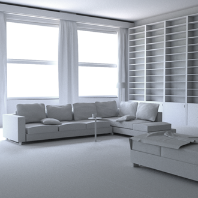
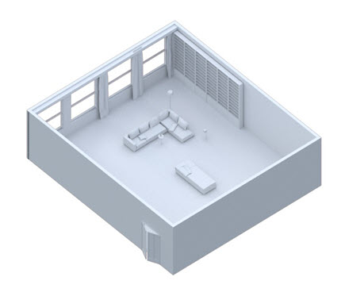
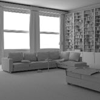
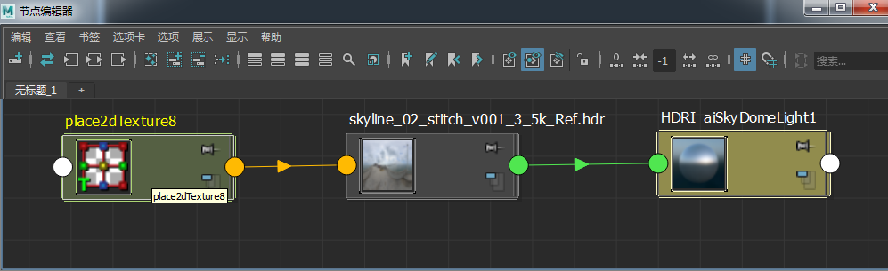
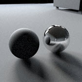
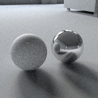
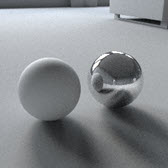
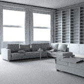
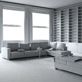

我们也可以使用 skydome_light 提供室内照明。但是，此灯光专为需要从多个方向进行照明的室外场景而设计。它在场景的地平线上采用球形圆顶，且物体将跟踪光线以对灯光进行采样。在室内，大多数光线会照射到物体上，根本就没有获得任何贡献。如果使用此灯光来提供室内照明，场景中将产生大量间接噪波，因此大多数情况下不建议使用此灯光。
不建议对室内场景使用天穹灯光 (skydome_light)。此灯光专为室外场景设计，在背景中表示为球形圆顶。多重重要性灯光采样将在此圆顶的特定方向上跟踪光线。但是，在室内场景中，大多数跟踪光线会照射到物体上，根本就没有从灯光获得任何贡献，反而会产生噪波。在这种情况下，四边形灯光和/或带方向性的照明将是更好的选择。

下图显示了“颜色”(Color)设置为白色的 skydome_light。通过将 Ai 天穹灯光采样数设置为 3 并将 GI 漫反射采样数设置为 8，我们可获得更加清晰的图像。
|  | |
| diffuse_ray_depth：1 | diffuse_ray_depth：3 |
我们还可以使用 HDRI 对房间进行照明。这会使房间的照明看起来比较自然。在这种室内照明场景中，HDRI 的照明效果有好有坏。建议使用具有强太阳光的 HDRI，以便获得更好的透过窗户的带方向性的灯光。

增大漫反射采样数可减少图像中的噪波。但是，这会花费更多时间进行渲染，而且即使漫反射采样数为 8，图像仍然存在噪波。
|  |  |  |
| diffuse_samples：0 | diffuse_samples：3 | diffuse_samples：8 |
|  |  |
| diffuse_samples：3（3 分钟） | diffuse_samples：8（14 分钟） |